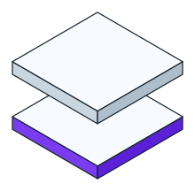
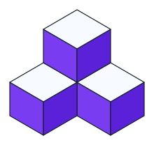
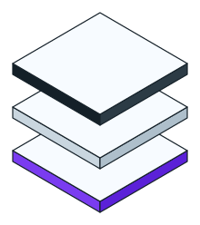
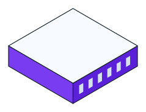

Current · stacked tileThe raster you have now
The current stacked tile is first, then four new isometric options. Each shows on a light and a dark ground. Pick one and I will replace the hero image with it.



